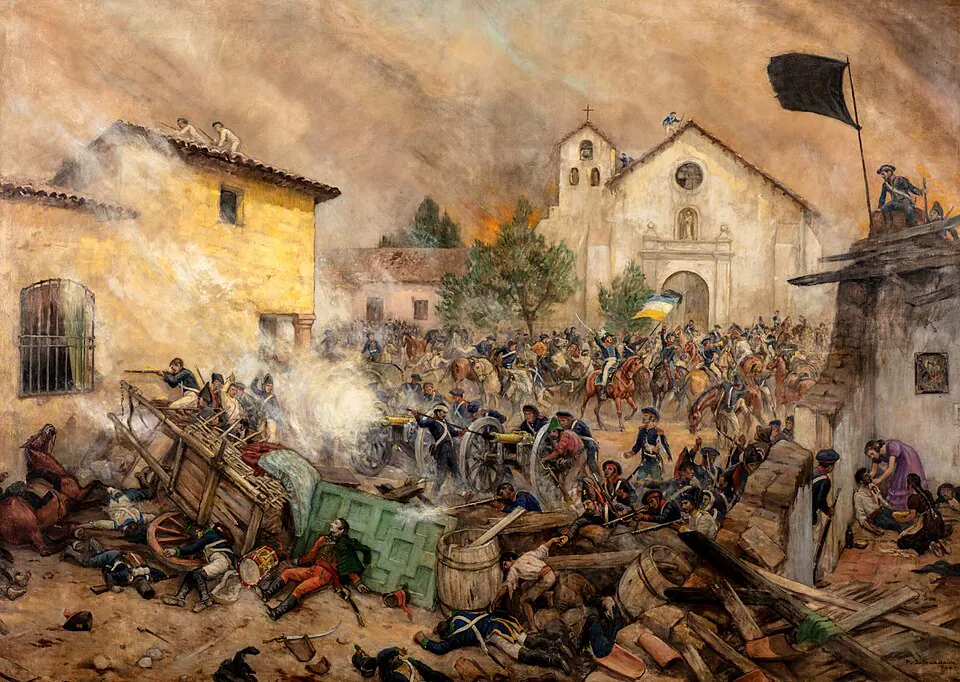

Desastre de Rancagua

A mediados de 1814, el virrey del Perú desconoció el Tratado de Lircay y envió un nuevo ejército al mando de Mariano Osorio. Las divisiones entre José Miguel Carrera, que había retomado el poder, y Bernardo O'Higgins dificultaron la defensa. O'Higgins decidió resistir en Rancagua, donde atrincheró a sus tropas en torno a la plaza, mientras Carrera mantenía una división en las afueras.
Entre el 1 y el 2 de octubre, los patriotas soportaron un asedio con fuertes pérdidas. La ayuda esperada no llegó y, con las municiones agotándose, O'Higgins rompió el cerco con una carga de caballería. La derrota abrió la Reconquista (1814–1817): el gobierno realista persiguió a los patriotas, confiscó bienes y desterró a muchos al Archipiélago Juan Fernández, mientras numerosos patriotas y sus familias cruzaban los Andes rumbo a Mendoza.
La responsabilidad del desastre ha dividido por casi dos siglos a la historiografía: unos culpan a Carrera por no auxiliar a la plaza; otros cuestionan la decisión de O'Higgins de encerrarse en la ciudad. Hoy se tiende a ver la derrota como resultado de la desunión patriota y de la superioridad del ejército realista.
Versión para niños
En octubre de 1814, un ejército enviado por el virrey del Perú avanzó hacia Santiago. Los patriotas, dirigidos por Bernardo O'Higgins, se encerraron en la ciudad de Rancagua para detenerlo. Resistieron durante dos días esperando la ayuda de las tropas de José Miguel Carrera, que no lograron llegar. Finalmente, O'Higgins y parte de sus hombres rompieron el cerco y escaparon. Muchos patriotas tuvieron que huir a Mendoza, al otro lado de la cordillera de los Andes.
Para maestros
Nivel sugerido: 6° básico
Objetivo: Analizar las causas de la derrota patriota en Rancagua y sus consecuencias, contrastando interpretaciones sobre la responsabilidad de O'Higgins y Carrera.
Preguntas para la clase:
- ¿Qué consecuencias tuvo para los patriotas la falta de unidad entre sus líderes?
- ¿Por qué los historiadores no se ponen de acuerdo sobre quién fue responsable de la derrota?
- ¿Qué cambió en la vida de las personas durante la Reconquista?
Actividad (20–30 min): Debate guiado: una mitad del curso explica las decisiones de O'Higgins y la otra las de Carrera, usando fragmentos de textos escolares o de historiadores entregados por el docente. Al cierre, el curso redacta una conclusión común sobre la importancia de la unidad.
Fuentes sugeridas: Memoria Chilena; Museo Histórico Nacional; Biblioteca Nacional Digital.
Objetivos de Aprendizaje (Currículum Nacional)
- 6° básico · HI06 OA 02 Explicar el desarrollo del proceso de independencia de Chile … las batallas de Rancagua, Chacabuco y Maipú, y la Declaración de la Independencia
- 8° básico · HI08 OA 16 Explicar la independencia de las colonias hispanoamericanas como un proceso continental … y analizar en este marco el proceso de Independencia de Chile
Personajes
Revisión humana pendiente. Cómo se revisa · Reportar un error
Cómo citar: Historia de Chile. (2026). Desastre de Rancagua. En Historia de Chile: atlas y línea de tiempo. https://moises-salgado.github.io/historia-de-chile/momento/desastre-de-rancagua.html